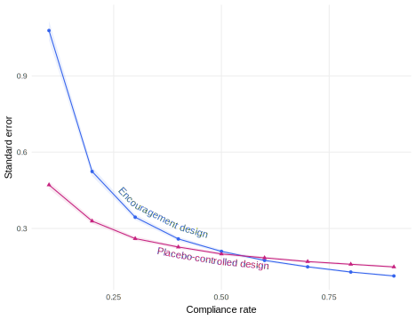

compliance_rate <- 0.2
MI <-
declare_model(
N = 400,
type = sample(x = c("Never-Taker", "Complier"),
size = N,
prob = c(1 - compliance_rate, compliance_rate),
replace = TRUE),
U = rnorm(N),
# potential outcomes of Y with respect to D
potential_outcomes(
Y ~ case_when(
type == "Never-Taker" ~ 0.75 - 0.25 * D + U,
type == "Complier" ~ 0.25 + 0.50 * D + U
),
conditions = list(D = c(0, 1))
),
# potential outcomes of D with respect to Z
potential_outcomes(
D ~ if_else(Z == 1 & type == "Complier", 1, 0),
conditions = list(Z = c(0, 1))
)
) +
declare_inquiry(
CACE = mean(Y_D_1[type == "Complier"] -
Y_D_0[type == "Complier"])
)37 Placebo-controlled experiments
We compare an encouragement design to a placebo-controlled trial in which units are selected into treatment based on whether they receive either treatment or a placebo treatment with a similar deployment method. At low levels of compliance, the diagnosis reveals the placebo-controlled design is preferred, but then the encouragement design is preferred as compliance increases.
In common usage, the notion of a placebo is a treatment that carries with it everything about the bona fide treatment – except the active ingredient. We’re used to thinking about placebos in terms of the “placebo effect” in medical trials. Some portion of the total effect of the actual treatment is due to the mere act of getting treated, so the administration of placebo treatments can difference this portion off. Placebo-controlled designs abound in the social sciences too for similar purposes (see Porter and Velez 2021). Media treatments often work through a bundle of priming effects and new information; a placebo treatment might include only the prime but not the information. The main use of placebos is to difference off the many small excludability violations involved in bundled treatments the better to understand the main causal variable of interest.
In this chapter, we study the use of placebos for a different purpose: to combat the negative design consequences of noncompliance in experiments. As described in the previous chapter, a challenge for experiments that encounter noncompliance is that we do not know for sure who the compliers are. Compliers are units that would take treatment if assigned to treatment, but would not do so if assigned to control. Compliers are different from always-takers and never-takers in that assignment to treatment actually changes which potential outcome they reveal.
In the placebo-controlled design, we attempt to deliver a real treatment to the treatment group and a placebo treatment to the placebo group, then we conduct our analysis among those units that accept either treatment. This design solves two problems at once. First, it lets us answer a descriptive question: “Who are the compliers?” Second, it lets answer a causal causal question: “What is the average effect of treatment among compliers?”
Employing a placebo control can seem like an odd design choice – you go to all the effort of contacting a unit but at the very moment you get in touch, you deliver a placebo message instead of the treatment message. It turns out that despite this apparent waste, the placebo-controlled design can often lead to more precise estimates than the standard encouragement design. Whether it does or not depends in large part on the underlying compliance rate.
Declaration 37.1 actually includes two separate designs. Here we’ll directly compare the standard encouragement design to the placebo-controlled design. They have identical models and inquiries, so we’ll just declare those once, before declaring the specifics of the empirical strategies for each design.
Declaration 37.1 Comparing the encouragement and placebo-controlled designs
Here again are the data and answer strategies for the encouragement design (simplified from the previous chapter to focus on the one-sided compliance case). We conducted a random assignment among all units, then reveal treatment status and outcomes according to the potential outcomes declared in the model. The two-stage least squares estimator operates on all \(N\) units to generate estimates of the CACE.
declaration_18.9_encouragement <-
MI +
declare_assignment(Z = complete_ra(N)) +
declare_measurement(D = reveal_outcomes(D ~ Z),
Y = reveal_outcomes(Y ~ D)) +
declare_estimator(
Y ~ D | Z,
.method = iv_robust,
inquiry = "CACE",
label = "2SLS among all units"
)By contrast, here are the data and answer strategies for the placebo-controlled design. In a typical canvassing experiment setting, the expensive part is sending canvassing teams to each household, regardless of whether a treatment or a placebo message is delivered when the door opens. So in order to keep things “fair” across the placebo-controlled and encouragement designs, we’re going to hold fixed the number of treatment attempts – the sampling step subsets to the same \(N/2\) that we will attempt. Then among that subset, we conduct a random assignment to treatment or placebo. When we attempt to deliver the placebo or the treatment, we will either succeed or fail, which gives us a direct measure of whether a unit is a complier. This measurement is represented in the declare_measurement step where an observable X now corresponds to compliance type. We conduct our estimation directly conditioning on the subset of the sample we have measured to be compliers.
declaration_18.9_placebo <-
MI +
declare_sampling(S = complete_rs(N, n = 200)) +
declare_assignment(Z = complete_ra(N)) +
declare_measurement(X = if_else(type == "Complier", 1, 0),
D = reveal_outcomes(D ~ Z),
Y = reveal_outcomes(Y ~ D)) +
declare_estimator(
Y ~ Z,
subset = X == 1,
.method = lm_robust,
inquiry = "CACE",
label = "OLS among compliers"
)Diagnosis 37.1 Diagnosing the encouragement and placebo-controlled designs
We diagnose both the encouragement design and the placebo-controlled design over a range of possible levels of noncompliance, focusing on the standard deviation of the estimates (the standard error) as our main diagnosand. Figure 37.1 shows the results of the diagnosis. At high levels of compliance, the standard encouragement design actually outperforms the placebo-controlled design. But when compliance is low, the placebo-controlled design is preferred. Which design is preferable in any particular scenario will depend on the compliance rate as well as other design features like the total number of attempts and the fraction treated (see D. E. Broockman, Kalla, and Sekhon 2017).
diagnosis_18.10_encouragment <-
declaration_18.9_encouragment |>
redesign(compliance_rate = seq(0.1, 0.9, by = 0.1)) |>
diagnose_designs(sims = sims, bootstrap_sims = bootstrap_sims)
diagnosis_18.10_placebo <-
declaration_18.9_placebo |>
redesign(compliance_rate = seq(0.1, 0.9, by = 0.1)) |>
diagnose_designs(sims = sims, bootstrap_sims = bootstrap_sims)
37.1 Design examples
D. Broockman and Kalla (2016) use a placebo-controlled design in their study of a transphobia-reduction canvassing treatment. Households were assigned either a placebo (a conversation about recycling) or the treatment; analysis was conducted among those who opened the door to the canvasser.
Wilke, Green, and Cooper (2020) extend the placebo-controlled design in a media experiment in Uganda. Film festival attendees were assigned to watch public service announcements on one or two of three topics; post-treatment attitudes about all three topics were measured for all subjects. Subjects who saw the treatment on a given topic served as placebo controls for subjects who saw treatments on other topics. Under the maintained placebo assumption that treatments on one topic won’t affect attitudes on other topics, this design allows for efficient, unbiased inference for the effects of multiple treatments on their targeted outcomes.